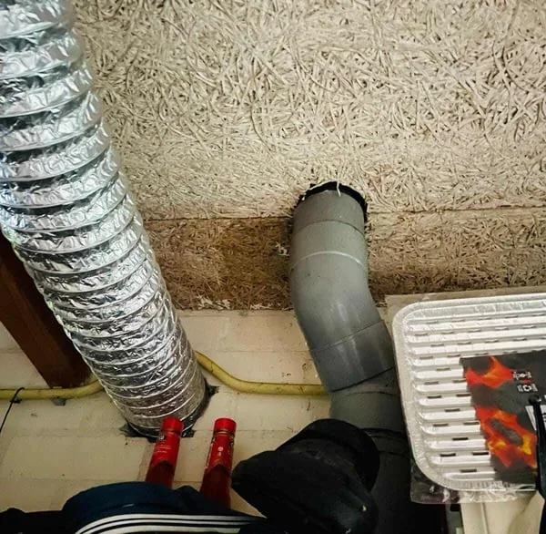
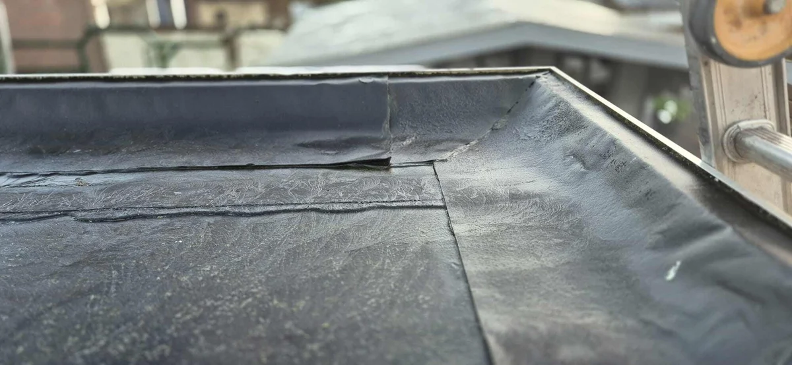
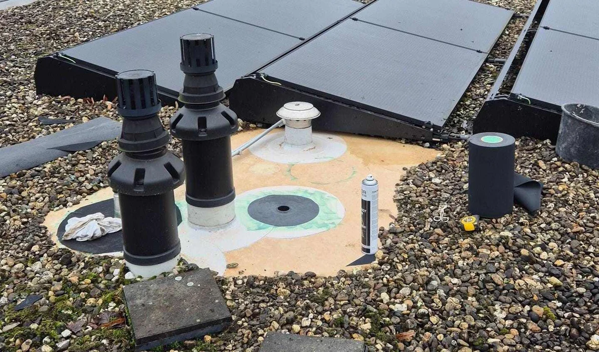

Plat dak reparatie
Uw bitumen dak aan vervanging toe? Of is reparatie nog mogelijk, u leest het hier, of win direct informatie in bij één van onze experts!
- ✓Kom in contact en laat een gratis dakinspectie uitvoeren om de staat van uw dak te beoordelen!
- ✓Kom in contact en onze expert zal uw specifieke situatie toelichten!
- ✓Neem direct contact op en ontvang een kostenindicatie voor uw specifieke situatie!

Situaties uit de praktijk
Beelden van dakdetails, slijtage of werkzaamheden die passen bij dit onderwerp.


Reparatie plat dak
Platte daken komen in Nederland minder vaak voor dan in veel andere landen, desalniettemin is het een bekende en veelvoorkomende wijze van dakafwerking. Het afwerken middels een plat dak komt veel voor op schuurtjes, een aanbouw, veranda of bedrijfspand. Hoewel de levensduur van de verschillende soorten dakbedekkingen onderling kan verschillen, komt er altijd een moment dat ook uw plat dak aan vervanging toe is. Lees alles over de opbouw, materialen en levensduur op onze informatiepagina Plat dak .
Niet is vervelender dan een lekkage. Uw dak hoort u en uw eigendommen droog en in goede staat te houden. Vervelend om dan tot de ontdekking te komen, dat het toch is misgegaan. Hoe eerder u, actie onderneemt, hoe meer gevolgschade u kunt voorkomen!
Wanneer reparatie plat dak uit laten voeren?
Belangrijk bij een reparatie aan een plat dak is om uiteraard de oorzaak te vinden. Maar nog belangrijker is, om goed inzicht te krijgen in de algehele staat van uw dak. Zo kan er afgewogen worden of reparatie nog zinvol is. Wanneer uw algehele dak in slechte staat is, is reparatie wel mogelijk, maar zal er misschien op korte termijn weer lekkage optreden. Het is dan ook goed om af te wegen of kosten maken voor reparatie verstandig is, of dat wellicht het overlagen of vervangen een duurzamere keuze is.
Kom in contact en laat een gratis dakinspectie uitvoeren om de staat van uw dak te beoordelen!
Hoe reparatie plat dak uitvoeren?
De wijze van het uitvoeren van een reparatie aan een plat dak is afhankelijk van het type dakbedekking. Wij van Daklekkages Opgelost voeren reparaties uit aan ieder type dakbedekking. Wij kunnen u van dienst zijn van het opsporen tot het repareren van het lek aan uw plat dak. Omdat de methodes van reparatie erg afhankelijk zijn van het type dakbedekking en de locatie van de lekkage, kunnen wij deze hier niet allemaal toelichting.
Kom in contact en onze expert zal uw specifieke situatie toelichten!
Kosten reparatie plat dak?
De kosten voor het repareren van een lek aan uw plat dak zijn zeer verschillend. Hier is ook geen eenduidig antwoord op te geven. Bij een bitumen dak, kan een lekkagepunt vaak gevonden worden met een dakinspectie, terwijl kleinere lekken aan bijvoorbeeld EPDM of PVC, met het oog niet of nauwelijks kunnen worden waargenomen. Een klein lek opsporen, moet dan ook veelal gebeuren middels een lekdetectie. Daarnaast spelen grote van het lek, aantal lekpunten, locatie van het lek, bereikbaarheid en omstandigheden een grote rol.
Neem direct contact op en ontvang een kostenindicatie voor uw specifieke situatie!
Advies of meer informatie nodig?
Onze experts staan voor u klaar. Ontvang gratis advies of meer informatie over uw specifieke situatie!
Wilt u zekerheid over uw dak?
Laat de situatie beoordelen voordat schade groter wordt. U krijgt helder advies over wat nodig is, wat kan wachten en welke oplossing duurzaam is.